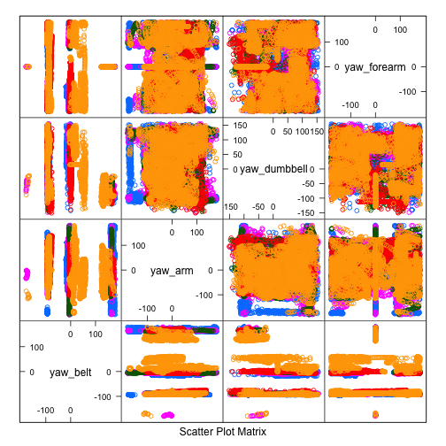
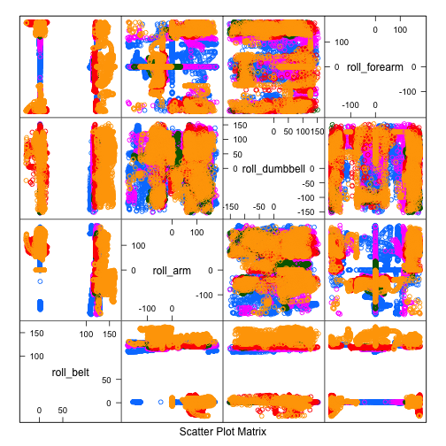
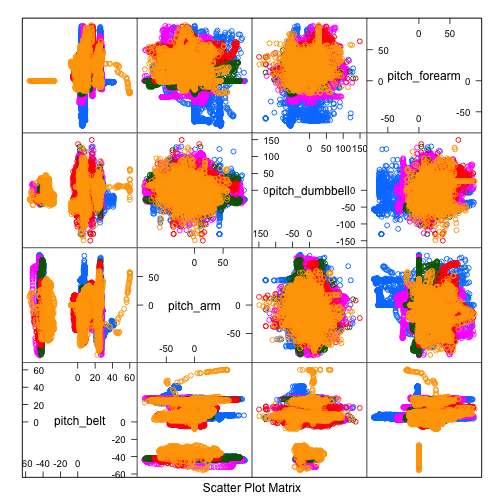

Using devices such as Jawbone Up, Nike FuelBand, and Fitbit it is now possible to collect a large amount of data about personal activity relatively inexpensively. These type of devices are part of the quantified self movement a group of enthusiasts who take measurements about themselves regularly to improve their health, to find patterns in their behavior, or because they are tech geeks. One thing that people regularly do is quantify how much of a particular activity they do, but they rarely quantify how well they do it.
In this project, data from accelerometers on the belt, forearm, arm, and dumbell of 6 participants will be used. These participants were asked to perform barbell lifts correctly and incorrectly in 5 different ways.
The goal of the project is to predict the manner in which they did the exercise.
I'd like to kindly thank the people at http://groupware.les.inf.puc-rio.br/har for allowing us to make use of their data.
The data-set provided for training the model contained several issues. The most important one was the number of columns to use for the model. Since my expectation was that the relationship to many of these would be very tight, but at the same time would decrease the performance of the machine learning phase, I decided to drop most of the seemingly related columns and keep just the rest.
With this in mind, several prediction models have been tested, of which some are included in this report. Confusion matrices have been printed to validate the accuracy and out of sample errors. As it turns out the Random Forest Model delivered a 99% accuracy using either the independent randomForest package, or using the integration with caret:
As it turns out the above randomForest model has resulted in a 100% score for the submission part of this Data Science module.
Here we load some required libraries:
# install.packages("caret", dependencies=TRUE, quiet = TRUE)
library(caret)
library(ggplot2)
library(randomForest)
library(rpart)
In this section we download the data, load the downloaded files into memory.
trainingFile <- download.file('https://d396qusza40orc.cloudfront.net/predmachlearn/pml-training.csv', 'pml-training.csv', method="curl")
trainSet <- read.csv("pml-training.csv")
testingFile <- download.file('https://d396qusza40orc.cloudfront.net/predmachlearn/pml-testing.csv', 'pml-testing.csv', method="curl")
testSet <- read.csv("pml-testing.csv")
Here's an excerpt of the two data-sets, trainSet and headSet:
head(trainSet[grep("^yaw|^roll|^pitch|^picth|^classe", names(trainSet))],2);
## roll_belt pitch_belt yaw_belt roll_arm pitch_arm yaw_arm roll_dumbbell
## 1 1.41 8.07 -94.4 -128 22.5 -161 13.05
## 2 1.41 8.07 -94.4 -128 22.5 -161 13.13
## pitch_dumbbell yaw_dumbbell roll_forearm pitch_forearm yaw_forearm
## 1 -70.49 -84.87 28.4 -63.9 -153
## 2 -70.64 -84.71 28.3 -63.9 -153
## classe
## 1 A
## 2 A
head(trainSet[grep("^yaw|^roll|^pitch|^picth|^classe", names(testSet))],2);
## roll_belt pitch_belt yaw_belt roll_arm pitch_arm yaw_arm roll_dumbbell
## 1 1.41 8.07 -94.4 -128 22.5 -161 13.05
## 2 1.41 8.07 -94.4 -128 22.5 -161 13.13
## pitch_dumbbell yaw_dumbbell roll_forearm pitch_forearm yaw_forearm
## 1 -70.49 -84.87 28.4 -63.9 -153
## 2 -70.64 -84.71 28.3 -63.9 -153
summary(trainSet$classe)
## A B C D E
## 5580 3797 3422 3216 3607
nrow(trainSet)
## [1] 19622
nrow(testSet)
## [1] 20
Some brief feature plots to analyse a part of the data are as follows. There are clear relationships visible between the different sensors, as well as spurious patterns.
featurePlot(x=trainSet[,grep("^yaw", names(trainSet))], trainSet$classe, plot="pairs")

featurePlot(x=trainSet[,grep("^roll", names(trainSet))], trainSet$classe, plot="pairs")

featurePlot(x=trainSet[,grep("^pitch|^picth", names(trainSet))], trainSet$classe, plot="pairs")

The following can be noted about the data through the file and documentation:
Before we engage in the Machine Learning phase we need to clean up the data. This will be according to some of the above comments made in the Exploratory Data Analysis section.
An important note is that I decided to be very rough in the cleansing, and will just keep the yaw, roll, pitch columns for the various sensors, and drop the rest. The classe column will also be included.
# Filter out just the yaw, roll, pi[ct]h and classe columns, drop the rest
cleanedTrainSet <- trainSet[grep("^yaw|^roll|^pitch|^picth|^classe", names(trainSet))]
# Convert the classe column to a factor.
cleanedTrainSet$classe <- as.factor(cleanedTrainSet$classe)
# Number of rows in the cleaned training set
nrow(cleanedTrainSet)
## [1] 19622
# Validating if there are no empty rows / columns in the resulting set:
sum(complete.cases(cleanedTrainSet))
## [1] 19622
In this first machine learning exercise, we will be using randomForest modeling. The accuracy of this model is supposed to be high. As it turns out, the speed turned out to be fairly okay, just a couple of seconds to generate against the training-set. However, if I run the randomForest generation as a parameter to caret's train package, it takes an awfully long time.
inTrain <- createDataPartition(y=cleanedTrainSet$classe, p=0.8, list=FALSE)
training <- cleanedTrainSet[inTrain,]
testing <- cleanedTrainSet[-inTrain,]
# Create a random forest model
randomForestModel <- randomForest(classe ~ . , data=training)
# Cross-validate the predictions against the test-set
predictions <- predict(randomForestModel, newdata=testing)
And last, let's plot a confusionMatrix to show how well we did:
confusionMatrix(predictions, testing$classe)
## Confusion Matrix and Statistics
##
## Reference
## Prediction A B C D E
## A 1115 4 0 1 0
## B 1 742 3 0 0
## C 0 12 675 2 3
## D 0 1 5 640 2
## E 0 0 1 0 716
##
## Overall Statistics
##
## Accuracy : 0.991
## 95% CI : (0.988, 0.994)
## No Information Rate : 0.284
## P-Value [Acc > NIR] : <2e-16
##
## Kappa : 0.989
## Mcnemar's Test P-Value : NA
##
## Statistics by Class:
##
## Class: A Class: B Class: C Class: D Class: E
## Sensitivity 0.999 0.978 0.987 0.995 0.993
## Specificity 0.998 0.999 0.995 0.998 1.000
## Pos Pred Value 0.996 0.995 0.975 0.988 0.999
## Neg Pred Value 1.000 0.995 0.997 0.999 0.998
## Prevalence 0.284 0.193 0.174 0.164 0.184
## Detection Rate 0.284 0.189 0.172 0.163 0.183
## Detection Prevalence 0.285 0.190 0.176 0.165 0.183
## Balanced Accuracy 0.999 0.988 0.991 0.996 0.996
The confusion matrix shows a very high accuracy of close to 99%, which is very good! Sensitivity (missed positives) show that incorrectly categorization of the test class is very low. Specificity is showing the same; the likelihood of incorrect categorization of not being the test class is very low (negatives called positives). So I think we found a good model.
As a fun exercise, another attempt at learning the model can be done using a tree model. The below shows how this is done using caret.
inTrain <- createDataPartition(y=cleanedTrainSet$classe, p=0.8, list=FALSE)
training <- cleanedTrainSet[inTrain,]
testing <- cleanedTrainSet[-inTrain,]
# Create a tree model
treeModel <- train(classe ~ . , data=training, method="rpart")
# Cross-validate the predictions against the test-set
predictions <- predict(treeModel, newdata=testing)
confusionMatrix(predictions, testing$classe)
## Confusion Matrix and Statistics
##
## Reference
## Prediction A B C D E
## A 1018 375 318 380 151
## B 2 130 14 4 4
## C 93 254 352 259 258
## D 0 0 0 0 0
## E 3 0 0 0 308
##
## Overall Statistics
##
## Accuracy : 0.461
## 95% CI : (0.445, 0.477)
## No Information Rate : 0.284
## P-Value [Acc > NIR] : <2e-16
##
## Kappa : 0.292
## Mcnemar's Test P-Value : NA
##
## Statistics by Class:
##
## Class: A Class: B Class: C Class: D Class: E
## Sensitivity 0.912 0.1713 0.5146 0.000 0.4272
## Specificity 0.564 0.9924 0.7333 1.000 0.9991
## Pos Pred Value 0.454 0.8442 0.2895 NaN 0.9904
## Neg Pred Value 0.942 0.8331 0.8774 0.836 0.8857
## Prevalence 0.284 0.1935 0.1744 0.164 0.1838
## Detection Rate 0.259 0.0331 0.0897 0.000 0.0785
## Detection Prevalence 0.572 0.0393 0.3100 0.000 0.0793
## Balanced Accuracy 0.738 0.5818 0.6239 0.500 0.7131
The confusionMatrix shows a very low accuracy. The model training has been untuned, and can probably perform much better.
A further attempt at learning the model can be done using a boosted tree. The below shows how this is done. The execution time turned out to very long.
inTrain <- createDataPartition(y=cleanedTrainSet$classe, p=0.8, list=FALSE)
training <- cleanedTrainSet[inTrain,]
testing <- cleanedTrainSet[-inTrain,]
# Create a boosted tree model
gbmModel <- train(classe ~ . , data=training, method="gbm", verbose = FALSE)
# Cross-validate the predictions against the test-set
predictions <- predict(gbmModel, newdata=testing)
confusionMatrix(predictions, testing$classe)
## Confusion Matrix and Statistics
##
## Reference
## Prediction A B C D E
## A 1056 27 0 1 4
## B 33 684 24 8 12
## C 7 36 635 17 7
## D 10 10 20 613 14
## E 10 2 5 4 684
##
## Overall Statistics
##
## Accuracy : 0.936
## 95% CI : (0.928, 0.943)
## No Information Rate : 0.284
## P-Value [Acc > NIR] : < 2e-16
##
## Kappa : 0.919
## Mcnemar's Test P-Value : 0.00023
##
## Statistics by Class:
##
## Class: A Class: B Class: C Class: D Class: E
## Sensitivity 0.946 0.901 0.928 0.953 0.949
## Specificity 0.989 0.976 0.979 0.984 0.993
## Pos Pred Value 0.971 0.899 0.905 0.919 0.970
## Neg Pred Value 0.979 0.976 0.985 0.991 0.989
## Prevalence 0.284 0.193 0.174 0.164 0.184
## Detection Rate 0.269 0.174 0.162 0.156 0.174
## Detection Prevalence 0.277 0.194 0.179 0.170 0.180
## Balanced Accuracy 0.967 0.938 0.954 0.968 0.971
Results appear to be quite good, around 93%. The sensitivity and specificity is not that great though.
As it turns out the Random Forest model as my first guess has proven to deliver very good results. Thus, in the below section we use the downloaded testSet file that does not contain the classe variable for our final predictions. Using this model we will predict the type of exercise that was used, and use that in the submission assignment.
# Now test out the results against the testSet loaded from the website.
predictionsTestSet <- predict(randomForestModel, newdata = testSet)
The below section writes the result files for the submission part of the assignment. Please use getwd() to locate the folder where these files are written.
pml_write_files = function(x){
n = length(x)
for(i in 1:n){
filename = paste0("problem_id_",i,".txt")
write.table(x[i],file=filename,quote=FALSE,row.names=FALSE,col.names=FALSE)
}
}
pml_write_files(predictionsTestSet)